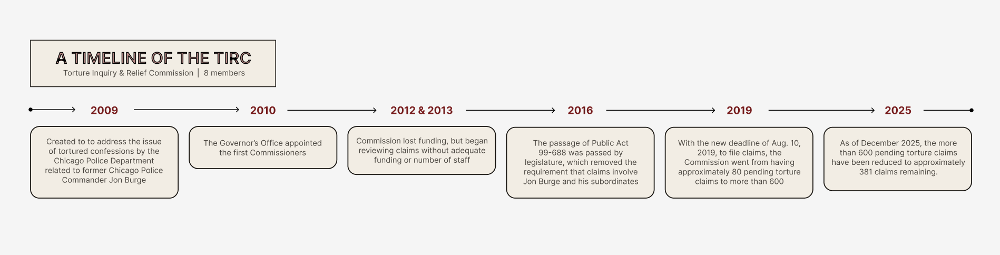

The Illinois Supreme Court is set to decide whether arbitration hearings for discipline in the most serious police misconduct cases can be shielded from the public.
The appeal stems from a 2024 lower court ruling which allowed officers facing the most serious discipline — termination or suspension longer than 365 days — to choose an arbitration hearing instead of a Chicago Police Board hearing, but mandated that the arbitration hearings remain public. The Police Board has adjudicated serious disciplinary cases since 1960, and their hearings are public.
The appellant, Chicago's police union, argues that officers bargained for private proceedings under their union contract. Union president John Catanzara Jr. did not respond to requests for comment.
Until the state Supreme Court rules, the most serious disciplinary cases are in limbo. Police Board hearings cannot proceed without the officer's consent, and arbitration hearings cannot proceed unless they comply with a court order. As of Dec. 31, 2025, 21 cases were stalled.
Max Caproni, executive director of the Police Board, voiced concerns about arbitration. He said arbitrators are selected with agreement from both the city and police union, so “there's an incentive there to kind of split things.”
Police Board members are appointed for fixed terms, and thus lack an incentive to please both sides, he said.
“Not to say that we're perfect,” he said. “But that's a big problem with arbitration.”
The current legal dispute sits within Chicago's broader system for police accountability, which includes federal court supervision, civilian oversight and internal disciplinary bodies.
A federal consent decree was enacted in 2019 following a federal civil rights investigation that determined Chicago Police Department officers, among other issues, “engage in a pattern or practice of using force, including deadly force, that is unreasonable.”
The consent decree — which Chicago WTTW News reporter Heather Cherone described as “among the most complicated in the history of consent decrees” — requires an overhaul of CPD's policies, training and structural organization.
“The CPD would tell you that they haven't even really begun to make those changes,” Cherone said. “Police departments, especially the Chicago Police Department, [have] been notoriously resistant to oversight.”
As of Dec. 31, 2025, the Independent Monitoring Report said CPD is currently in full compliance with 25% of the decree's requirements.
Chicago has also expanded civilian oversight through the Community Commission for Public Safety and Accountability, a body whose seven members are nominated by elected District Councils. The permanent commission began work in 2024.
-
1961
Chicago Police Board
A year after eight officers in the Summerdale district are caught running a burglary ring, the City Council establishes the city's first civilian body with authority over CPD. Nine members hear discipline cases when the recommended penalty is termination or a suspension longer than thirty days.12
-
1974
-
2007
-
2016
Civilian Office of Police Accountability
Six months after the Police Accountability Task Force concludes CPD has “no regard for the sanctity of life when it comes to people of color,” the Council replaces IPRA with COPA. The agency takes jurisdiction over eleven categories of misconduct, from excessive force to sexual abuse.12
-
2019
-
2021
-
2024
Among other powers, the commission has the ability to set and approve policy for the Police Department, COPA and the Police Board.
Frank Chapman is the educational director and field secretary of the Chicago Alliance Against Racist and Political Repression. Chapman and the CAARPR have long pushed for civilian control over the police.
“It was a 10-year struggle to get something done about this,” he said.
Chapman said he sees it as “significant reform” to have a civilian body that can “not only oversee police policies, but initiate policies of their own.”
Chicago's accountability systems have evolved from decades of police abuse — notably torture orchestrated by former police commander Jon Burge.
From the 1970s into the 1990s, Burge and detectives under his command used electric shock, suffocation and other torture methods to extract confessions from upward of 100 people, primarily Black men.
Mark Clements, who spent 28 years in prison after being tortured into a false confession at age 16, said reform has rarely come from institutions without sustained outside pressure.
“It's been the little people pressing the issues,” he said. “None of these things were freely given. It was given under a lot of sweat and misery by little poor old mothers because their kids had either been assassinated by members of our police department, or they had been wrongfully detained.”

In response to police torture, the Illinois Torture Inquiry and Relief Commission was created in 2009, a state body tasked with reviewing claims of police torture and referring credible cases back to the courts.
Paul Haidle, a supervising attorney with the commission, said that because traditional pathways often fail to adequately address torture claims, the commission may be a person's last chance for justice.
“There is essentially no other way if a person has exhausted their appeal and any post-conviction filings,” Haidle said. “This may be the only other avenue available for relief related to the torture aspect.”

Jennifer Crespo, general counsel for the commission, said that accountability requires sustained attention across multiple institutions.
“I'm even a part of the system,” she said. “I'm here as a state employee. It just requires constant vigilance to hold one another accountable.”
The upcoming Illinois Supreme Court case is another test of the transparency of Chicago's complex system to keep police accountable.
“Whether or not the new structures will prevent the next big scandal,” Cherone said. “I don't have a crystal ball.”
###